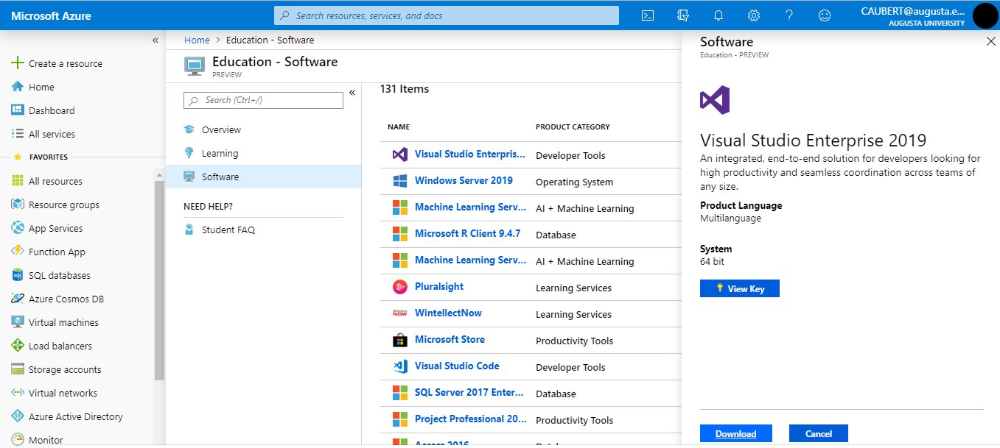
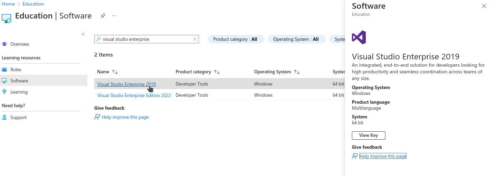
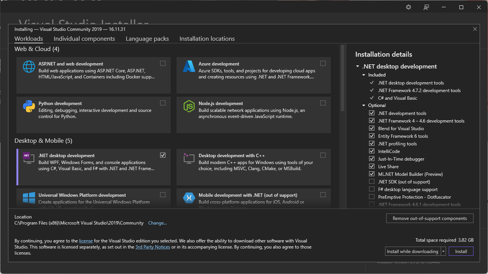

Installing Software
May 22, 2024 (01:30:37 PM)
Generalities on Installing Software
You probably already installed software in your life, be it VLC, Microsoft Teams, or Whatsapp. However, depending on whether you installed it on a phone, a tablet, a computer, and depending on the operating systems (Android, Windows 10, iOS, Ubuntu, etc.) your experience may have varied drastically.
Between the Play store, the command-line interface, homebrew and the act of downloading software using your browser and then installing it using the navigator, there can be a lot of differences, but in all those circumstances you should keep security in mind. In addition to making sure that you are downloading the software from a trusted source, you should also be vigilant about the information the software will be able to access about e.g., your private life.
As data can be lost or corrupted upon downloading, many platforms now use checksums to verify the integrity of the software you downloaded before installing it. This is an excellent practice that can also be performed “by hand”, as explained for instance for the database manager MySQL: the main idea is that the probability of the signature matching a tampered-with file is extremely low, and that as long as you are downloading the signature and the software from two different sources, you are considerably reducing the attack surface.
Executing Code Found on-line
As you progress in this class, you will be asked more and more to download and execute code hosted in our repository. How can you tell that you can trust this code?
We have not implemented checksum-matching (yet!), but you can trust this code as it was coded by your instructors, and hosted on a platform using two-factor authentication where every action is tracked using versioning. Concretely, this means that only somebody who manages to steal your instructor’s credentials and their phone, and thwart all the other instructors’ vigilance, would be able to host malicious code on our platform: while we certainly imagine that this is theoretically possible, we hope that you will agree that the probability is low enough for you to trust the code on this site.
As often, security is not absolute, but aims at providing reasonable confidence. Executing “blindly” code found on-line, on the other hand, gives you a good chance of facing unpleasant surprises: while there certainly is a lot of useful, good code on websites like stackoverflow—your instructor probably uses such websites, by the way!—, copying-and-pasting it without understanding its purpose or general structure is almost guaranteed to, at best, not execute properly, at worst, make your system unstable or insecure.
Accessing an IDE
An IDE, for “Integrated development environment”, is the software or service you will be using to write, compile, execute and debug your code. There are many available IDEs, and some can accommodate multiple different programming languages.
For C#, there are many different possibilities: some are cross-platforms (meaning you can use them on macOS, Windows or Linux), some are provided free of charge, some have not been updated in a long time. Three natural choices are Visual Studio, MonoDevelop and Rider. While the last two are accessible on every operating systems, Visual Studio is available only for Windows, and in a slightly different version for macOS.
To access one or the other, you will need either
- a computer with the right to install software on it,
- to access one of the computers in the computer lab, or
- a computer with internet access.
The third solution is a backup plan, as instead you will access a very minimal version of an IDE to test small snippets of code. You should not rely on it for the duration of this course.
Installing an IDE On Your Own Computer
This part gathers some references for you to install Visual Studio, MonoDevelop and Rider on your own computer, regardless of your operating system. It is strongly encouraged that you do so, especially if you want to continue in a CS/IT/Cyber degree, but is not mandatory1.
The instructions are detailed, but there are plenty of ways this can go wrong: make sure you have read and followed those instructions carefully before asking for help!
Installing Visual Studio On Your Own Computer
Note that we are not installing “Visual Studio Code”, but simply “Visual Studio”.
For Windows
Visit Azure Dev Tools for Teaching.
Log in using your Augusta University credentials.
Select “Download software”.
Look for Visual Studio. The path is Education → Software → Visual Studio Enterprise 2019/2022. You can search “Services” for the “Education” group and then click “Software” if the education group is not immediately displayed. It should look like the following:

Normally, the following direct link should get you to the right page: https://portal.azure.com/?Microsoft_Azure_Education_correlationId=8ee63052-dc32-46f7-a109-e26793622dbf#view/Microsoft_Azure_Education/EducationMenuBlade/~/software. Type “Visual Studio Enterprise” in the search bar and you should find what you are looking for:

Download and install Visual Studio (leave all the options on their default settings).
Before clicking install, make sure to check “.NET Desktop Development”
If you are installing Visual Studio 2019, click the dropdown for .NET Desktop Development and check “.NET SDK (out of support)”. You do not have to do this for Visual Studio 2022

Enter the product key you obtained previously, following the instructions in the documentation. Normally, clicking on “View key” on the screen pictured in the fourth step above should give you access to a key, that you simply need to copy-and-paste in the menu you can access on Visual Studio by clicking on “Select File” → “Account Settings” → “License with a Product Key”.
For Mac
Download a version of Visual Studio at https://visualstudio.microsoft.com/vs/mac/. It differs a bit from the Windows version, but that should not impact your experience in this class. The only Visual Studio feature we rely on is the ability to create “Console Apps with C#”, which is equally available in both the Windows and Mac versions.
Installing MonoDevelop On Your Own Computer
Unfortunately, MonoDevelop offers pre-packaged release only for linux distributions
- If you are using linux (e.g. Ubuntu, Debian, etc.), then please head out to MonoDevelop’s download page.
- If you are using MacOS, you can have a look at the compilation instructions, but it is very likely that you will find them impossible to understand.
- If you are using Windows, you can have a look at the compilation instructions, but it is very likely that you will find them impossible to understand.
Installing Rider On Your Own Computer
You can download Rider from their website, for any operating system. Note that, as a student, you can obtain a licence for free: simply fill out this form, making sure you use your @augusta.edu email account, and you should receive a free licence instantaneously!
Note that Jetbrains offers to use a SHA-256 checksum (for instance, for the linux version) for you to check that your download has not been tampered with. In any case, you can consult their detailled instructions to install and execute Rider on any operating system.
Installing Geany On Your Own Computer
- Note:
- This method will only allow you edit and compile individual .cs files, and will not compile C# Solution Projects (which will be required by the fifth week of lab). We would recommend learning another one of the IDEs listed above. If you still seek to use Geany throughout this course, you will be on your own to find a way to configure Geany to work with C# Solution Projects, and could start by reading this exchange (which is about projects in Linux, but applies equally well to projects in C#) or this one.
You can download Geany from their website, for any operating system. Unfortunately, Geany does not natively build and compile C# code. To use Geany as a text editor for C#, we must download the Mono C# compiler from their website. Make sure to download the most recent version to assure your compiler has the most up-to-date version of “.NET”.
Once you installed Mono, locate the “csc.bat”, “csc.exe” or “csc” file in Mono’s “bin” folder and copy the file path. This path can be of the form
C:\Program Files (x86)\Mono\bin\csc.baton windows, or
/usr/bin/cscon Unix systems.
Now open a .cs file using Geany. Click the arrow next to the “Build” Button and click “Set Build Commands” from the dropdown menu.
In the “Set Build Commands” window, erase the entry next to the “Compile” button and paste the file path to the “csc.bat” in quotation marks. After the file path, create a single space followed by “%f” with the quotaion marks. All in all, you should have something of the form
"C:\Program Files (x86)\Mono\bin\csc.bat" "%f"in the “Command” field of the “Compile” line.
Confirm the change by clicking OK and now you will be able to compile, build, and execute standalone .cs files.
Installing Anything Anywhere
If the IDE you would like to adopt is not available for your operating system, you can use a Virtual Machine manager to execute a linux-based distribution or a Windows image on top of your operating system.
For this, and regardless of your current operating system, you will need a Virtual Machine manager.
- There are many (free) options to chose from, let us mention
- Virtual Box (for Windows, Linux and Mac),
- QEMU (for Windows, Linux and Mac),
- Hyper-V (for Windows),
- Download a version of “Microsoft Operating Systems” from Azure Dev Tools for Teaching, or a linux-based distribution (typically, ubuntu has a good reputation of being accessible and user-friendly).
- Install and execute your version of Windows or Linux from your virtual machine, and follow the corresponding instructions to install the IDE you are interested in.
Note that it is illegal to execute macOS in a virtual environment that is not hosted on a mac computer, which drastically reduces the interest for you to consider this option.
Accessing One of the Computers in a Computer Lab
Please refer to this page from AU’s Information Technology to know where the computer labs are located. Visual Studio should be pre-installed on every computer.
Compiling Code On-Line
As a backup or only to test snippets of code, you can compile C# code online. Multiple online platforms exist, such as:
- https://www.browxy.com/
- https://www.tutorialspoint.com/compile_csharp_online.php
- https://www.onlinegdb.com/online_csharp_compiler
- https://www.jdoodle.com/compile-c-sharp-online/
- https://dotnetfiddle.net/
- https://www.w3schools.com/CS/trycs.php?filename=demo_helloworld
Note that none of them are endorsed by the school and that they can pose security and privacy challenges: never enter any sensitive information and do not rely on them too heavily. However, they can be a good support if you would like to test a short snippet of code but do not have access at the moment to a computer with an IDE installed.
Unless this class is fully online, of course.↩︎